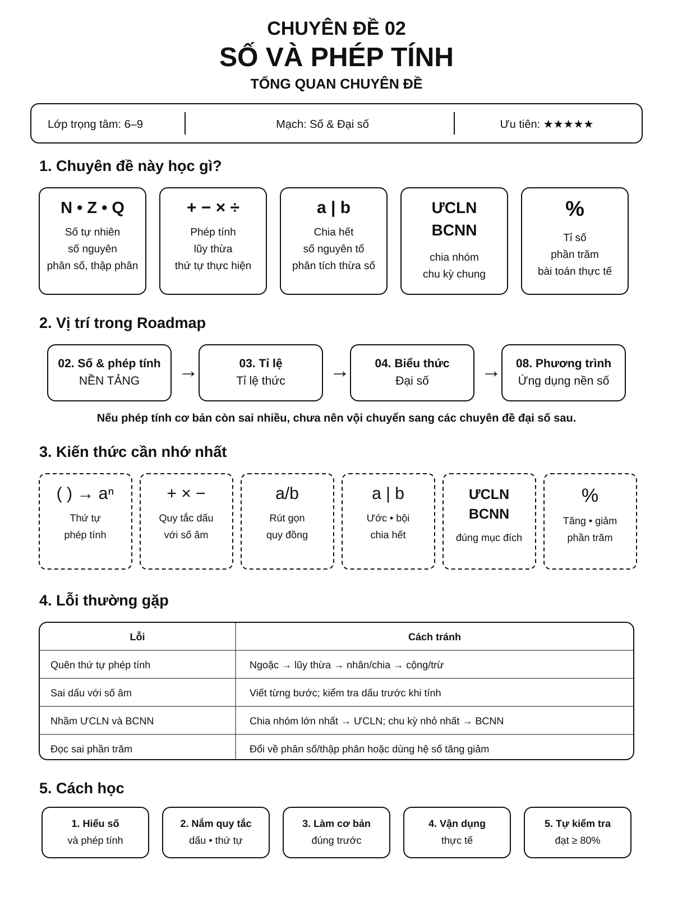
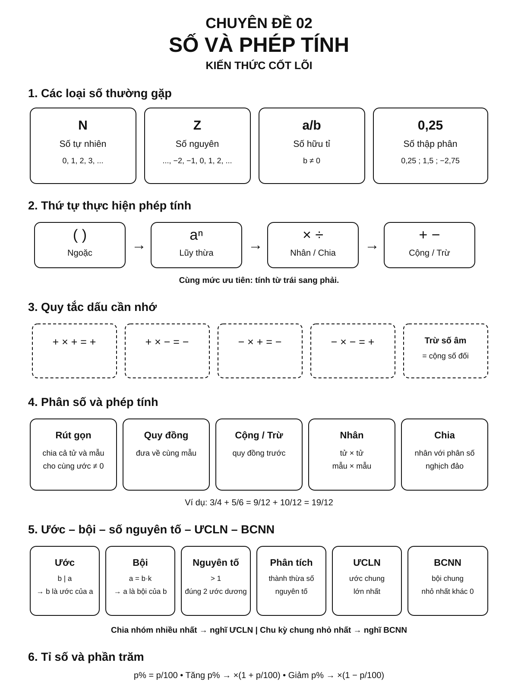
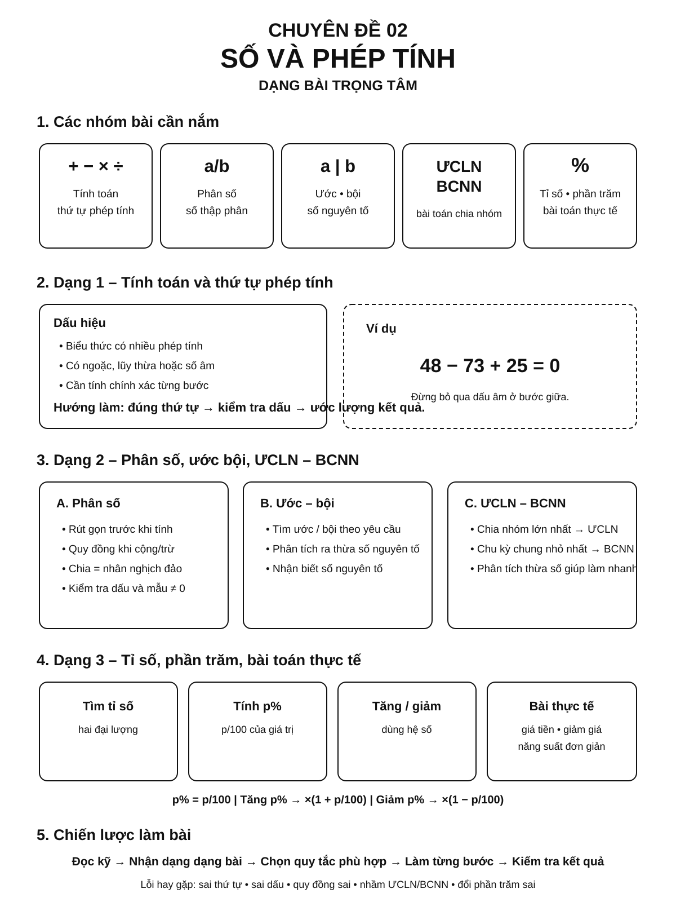

Chuyên đề 02 – Số và phép tính
Trạng thái: Đã kiểm định nội dung học thuật; cấu trúc Roadmap chuẩn 11 mục.
Lớp trọng tâm: 6–9 Mạch kiến thức: Số Mức ưu tiên: ⭐⭐⭐⭐⭐
Vai trò trong Roadmap: nền tảng số học xuyên suốt THCS, làm cơ sở cho tỉ lệ, biểu thức đại số, căn thức, xác suất và các bài toán thực tế.
🧭 1. Bản đồ kiến thức
Infographic 1 – Tổng quan chuyên đề

Dùng infographic này để nhìn nhanh chuyên đề học gì, nằm ở đâu trong Roadmap, kiến thức nào cần nhớ nhất và lỗi nào cần tránh.
SỐ VÀ PHÉP TÍNH
│
├── 1. Các tập hợp số
│ ├── Số tự nhiên
│ ├── Số nguyên
│ ├── Số hữu tỉ
│ └── Số thực
│
├── 2. Phép tính
│ ├── Cộng – trừ
│ ├── Nhân – chia
│ ├── Lũy thừa
│ └── Thứ tự thực hiện phép tính
│
├── 3. Chia hết
│ ├── Dấu hiệu chia hết
│ ├── Số nguyên tố – hợp số
│ ├── ƯCLN
│ └── BCNN
│
├── 4. Phân số – số hữu tỉ
│ ├── Rút gọn
│ ├── Quy đồng
│ ├── So sánh
│ └── Phép tính
│
├── 5. Số thập phân – phần trăm
│ ├── Chuyển đổi dạng số
│ ├── Tỉ số phần trăm
│ └── Bài toán tăng – giảm
│
└── 6. Giá trị tuyệt đối – căn bậc hai
├── Khoảng cách trên trục số
├── So sánh số
└── Chuẩn bị cho căn thức lớp 9
🎯 2. Mục tiêu cần đạt
Sau khi hoàn thành chuyên đề, học sinh cần có thể:
- [ ] Phân biệt được các tập hợp số thường gặp trong THCS.
- [ ] Thực hiện đúng các phép tính với số nguyên, phân số và số hữu tỉ; nhận biết, so sánh và ước lượng số thực ở mức nền tảng.
- [ ] Vận dụng đúng thứ tự thực hiện phép tính.
- [ ] Sử dụng thành thạo dấu hiệu chia hết, ƯCLN và BCNN.
- [ ] Rút gọn, quy đồng và so sánh phân số chính xác.
- [ ] Chuyển đổi linh hoạt giữa phân số, số thập phân và phần trăm.
- [ ] Hiểu ý nghĩa của giá trị tuyệt đối trên trục số.
- [ ] Biết ước lượng và kiểm tra tính hợp lí của kết quả.
📖 3. Kiến thức cốt lõi
Infographic 2 – Kiến thức cốt lõi

Dùng infographic này để ôn nhanh loại số, thứ tự phép tính, quy tắc dấu, phân số, ước–bội, ƯCLN–BCNN và phần trăm trước khi làm bài.
3.1. Các tập hợp số
Các tập hợp số quan trọng:
N: số tự nhiên.Z: số nguyên.Q: số hữu tỉ.R: số thực.
Quan hệ bao hàm:
N ⊂ Z ⊂ Q ⊂ R
Ví dụ:
5 ∈ N, Z, Q, R-3 ∈ Z, Q, R2/7 ∈ Q, R√2 ∈ Rnhưng√2 ∉ Q
3.2. Số đối và giá trị tuyệt đối
Hai số có tổng bằng 0 gọi là hai số đối nhau.
Ví dụ: 5 và -5.
Giá trị tuyệt đối của a, kí hiệu |a|, là khoảng cách từ điểm biểu diễn a đến 0 trên trục số.
|5| = 5
|-5| = 5
|0| = 0
Quy tắc:
- nếu
a ≥ 0thì|a| = a; - nếu
a < 0thì|a| = -a.
3.3. Quy tắc dấu với số nguyên
Cộng hai số cùng dấu
Cộng hai giá trị tuyệt đối rồi giữ nguyên dấu.
(-4) + (-7) = -11
Cộng hai số khác dấu
Lấy giá trị tuyệt đối lớn trừ giá trị tuyệt đối nhỏ và giữ dấu của số có giá trị tuyệt đối lớn hơn.
8 + (-13) = -5
Nhân và chia
- cùng dấu → kết quả dương;
- khác dấu → kết quả âm.
(-3)·(-5) = 15
(-18):6 = -3
3.4. Thứ tự thực hiện phép tính
Không có ngoặc:
Lũy thừa → Nhân/Chia → Cộng/Trừ
Có ngoặc:
( ) → [ ] → { }
Các phép cùng mức ưu tiên thực hiện từ trái sang phải.
Ví dụ:
18 - 2·3² = 18 - 18 = 0
3.5. Lũy thừa
Với số mũ tự nhiên, các quy tắc cơ bản:
a^m · a^n = a^(m+n)
(a^m)^n = a^(mn)
(ab)^n = a^n b^n
Riêng phép chia cần a ≠ 0; khi m ≥ n:
a^m : a^n = a^(m-n)
Ngoài ra, với a ≠ 0:
a^0 = 1
Cần đặc biệt phân biệt:
(-2)^4 = 16
-2^4 = -16
vì dấu âm trong biểu thức thứ hai không nằm trong cơ số lũy thừa.
3.6. Dấu hiệu chia hết cơ bản
Một số chia hết cho:
2nếu chữ số tận cùng chẵn;5nếu chữ số tận cùng là0hoặc5;10nếu chữ số tận cùng là0;3nếu tổng các chữ số chia hết cho3;9nếu tổng các chữ số chia hết cho9.
3.7. Số nguyên tố và phân tích ra thừa số nguyên tố
Số nguyên tố là số tự nhiên lớn hơn 1 chỉ có đúng hai ước dương: 1 và chính nó.
Ví dụ:
60 = 2²·3·5
84 = 2²·3·7
Phân tích ra thừa số nguyên tố là công cụ quan trọng để tìm ƯCLN, BCNN và rút gọn phân số.
3.8. ƯCLN và BCNN
Với hai số dương:
- ƯCLN: lấy các thừa số nguyên tố chung với số mũ nhỏ nhất.
- BCNN: lấy tất cả thừa số nguyên tố xuất hiện với số mũ lớn nhất.
Ví dụ:
60 = 2²·3·5
84 = 2²·3·7
nên:
ƯCLN(60,84) = 2²·3 = 12
BCNN(60,84) = 2²·3·5·7 = 420
3.9. Phân số
Hai phân số bằng nhau nếu:
a/b = c/d ⇔ ad = bc
với b ≠ 0, d ≠ 0.
Rút gọn
Chia cả tử và mẫu cho một ước chung khác 1.
18/24 = 3/4
Cộng – trừ
Cùng mẫu:
a/m ± b/m = (a ± b)/m
Khác mẫu: quy đồng trước.
Nhân – chia
a/b · c/d = ac/bd
a/b : c/d = a/b · d/c
với các mẫu và số chia khác 0.
3.10. Số hữu tỉ
Số hữu tỉ là số viết được dưới dạng a/b với a, b ∈ Z, b ≠ 0.
Số thập phân hữu hạn và số thập phân vô hạn tuần hoàn đều là số hữu tỉ.
Ví dụ:
0,25 = 1/4
0,333... = 1/3
3.11. Phần trăm
p% = p/100
Ví dụ:
25% = 0,25 = 1/4
Tìm p% của A:
A·p/100
Tăng p%:
A mới = A(1 + p/100)
Giảm p%:
A mới = A(1 - p/100)
Tăng 20% rồi giảm 20% không trở lại giá trị ban đầu vì hai lần tính phần trăm trên hai cơ sở khác nhau.
3.12. Căn bậc hai – mức nền tảng
Với a ≥ 0, √a là số không âm có bình phương bằng a.
√25 = 5
√49 = 7
Không viết √25 = ±5; kí hiệu √25 chỉ giá trị không âm.
🔗 4. Kiến thức liên quan
- 01. Bản đồ chương trình Toán THCS
- 03. Tỉ lệ – Tỉ lệ thức – Đại lượng tỉ lệ
- 04. Biểu thức và biến đổi đại số
- 11. Căn thức và biến đổi căn thức
- 23. Xác suất
- 24. Bài toán thực tế và mô hình hóa
🧩 5. Các dạng bài cần nắm vững
Infographic 3 – Dạng bài trọng tâm

Dùng infographic này trước khi luyện tập để nhận dạng nhanh dạng bài → quy tắc cần dùng → lỗi cần kiểm tra.
Dạng 1 – Thực hiện phép tính
Dấu hiệu: biểu thức chỉ chứa số và các phép toán.
Quy trình:
- Xác định ngoặc và lũy thừa.
- Thực hiện nhân/chia.
- Thực hiện cộng/trừ.
- Kiểm tra dấu và ước lượng kết quả.
Ví dụ:
A = 24 - 3·2² + 18:3
= 24 - 12 + 6
= 18
Dạng 2 – Tính nhanh, tính hợp lí
Tận dụng tính chất giao hoán, kết hợp, phân phối.
Ví dụ:
37·25 + 63·25
= (37 + 63)·25
= 100·25
= 2500
Dạng 3 – Bài toán chia hết
Thường yêu cầu tìm chữ số, chứng minh chia hết hoặc xác định số dư.
Ví dụ: tìm chữ số a để số 35a chia hết cho 3.
Ta có:
3 + 5 + a = 8 + a
phải chia hết cho 3, nên a ∈ {1,4,7}.
Dạng 4 – ƯCLN, BCNN và bài toán thực tế
Nhận dạng:
- chia thành các nhóm lớn nhất giống nhau → ƯCLN;
- các chu kì gặp lại → BCNN.
Ví dụ: hai đèn chớp theo chu kì 6 giây và 8 giây. Sau bao lâu cùng chớp lại?
BCNN(6,8) = 24
Sau 24 giây.
Dạng 5 – Rút gọn và so sánh phân số
Nên rút gọn trước nếu có thể.
Ví dụ:
18/24 = 3/4
15/20 = 3/4
nên hai phân số bằng nhau.
Dạng 6 – Biểu thức phân số nhiều bước
Ưu tiên rút gọn trước khi nhân.
Ví dụ:
14/15 · 25/28
= 1/2 · 5/3
= 5/6
Dạng 7 – Phần trăm
Ví dụ: giá 800 000 đồng giảm 15%.
Số tiền giảm = 800000·15% = 120000
Giá mới = 680000 đồng
Dạng 8 – Tìm số chưa biết
Ví dụ:
x + 3/5 = 7/10
x = 7/10 - 6/10 = 1/10
Đây là cầu nối sang phương trình.
Dạng 9 – Giá trị tuyệt đối
Mức mở rộng: bài toán tìm
xtừ biểu thức giá trị tuyệt đối dùng để rèn tư duy và chuẩn bị cho đại số; không nên hiểu là yêu cầu cốt lõi của mọi lớp THCS.
Ví dụ:
|x| = 5 ⇒ x = 5 hoặc x = -5
Dạng 10 – Ước lượng và kiểm tra kết quả
Nếu:
49,8·2,01
thì có thể ước lượng gần:
50·2 = 100
Kết quả chính xác phải xấp xỉ 100. Nếu máy tính cho 10 hoặc 1000 thì cần kiểm tra lại thao tác.
🚀 6. Dạng bài thi vào lớp 10
Chuyên đề số học thường không đứng riêng thành một câu lớn nhưng xuất hiện xuyên suốt trong mọi phần tính toán.
Trọng tâm 1 – Tính chính xác biểu thức ⭐⭐⭐⭐⭐
Sai số học có thể làm sai toàn bộ bài đại số hoặc hình học sau đó.
Trọng tâm 2 – Phân số, tỉ số, phần trăm ⭐⭐⭐⭐
Thường xuất hiện trong bài toán thực tế, thống kê và mô hình hóa.
Trọng tâm 3 – Giá trị tuyệt đối và căn bậc hai ⭐⭐⭐⭐
Là nền cho số thực ở lớp 7 và căn thức ở lớp 9.
Trọng tâm 4 – Chia hết, số nguyên ⭐⭐⭐
Có thể xuất hiện trong các bài số học nâng cao hoặc bài chứng minh.
⚠️ 7. Lỗi sai thường gặp
❌ Lỗi 1: Sai thứ tự phép tính
Sai:
8 + 2·3 = 10·3 = 30
Đúng:
8 + 2·3 = 8 + 6 = 14
❌ Lỗi 2: Nhầm dấu khi nhân số âm
(-3)(-4) = 12
không phải -12.
❌ Lỗi 3: Cộng cả tử và mẫu
Sai:
1/2 + 1/3 = 2/5
Đúng:
1/2 + 1/3 = 3/6 + 2/6 = 5/6
❌ Lỗi 4: Chia phân số nhưng không nghịch đảo số chia
2/3 : 4/5 = 2/3 · 5/4 = 5/6
❌ Lỗi 5: Nhầm -2² với (-2)²
-2² = -4
(-2)² = 4
❌ Lỗi 6: Quên rút gọn kết quả
Kết quả phân số nên đưa về dạng tối giản nếu đề không yêu cầu khác.
❌ Lỗi 7: Nhầm phần trăm với điểm phần trăm
Từ 20% lên 25% là tăng 5 điểm phần trăm, nhưng tăng tương đối 25% so với mức 20% ban đầu.
❌ Lỗi 8: Viết √25 = ±5
Đúng là:
√25 = 5
Còn phương trình x² = 25 mới có hai nghiệm x = ±5.
📝 8. Luyện tập
Mức 1 – Nhận biết
- Tính
(-7) + 12. - Tính
(-4)(-6). - Viết
0,35dưới dạng phân số tối giản. - Tính
ƯCLN(18,30). - Tính
BCNN(12,15). - Tính
|-9|.
Mức 2 – Thông hiểu
- Tính
24 - 3·2² + 18:3. - Rút gọn
84/126. - Tính
5/6 - 7/15. - Tìm
x:x - 3/4 = 5/8. - Một mặt hàng giá 1 200 000 đồng giảm 10%. Tính giá mới.
Mức 3 – Vận dụng
- Tính nhanh
48·125 + 52·125. - Tìm chữ số
ađể số47achia hết cho 9. - Ba chuông reo theo chu kì 6 phút, 8 phút và 12 phút. Sau bao lâu chúng cùng reo lại?
- Một số tăng 20% rồi giảm 20%. So sánh kết quả với số ban đầu.
- Tìm
xbiết|2x - 1| = 7.
Mức 4 – Nâng cao / tổng hợp
- Tìm số tự nhiên nhỏ nhất chia cho 6 dư 1, chia cho 8 dư 3.
- Chứng minh tổng ba số nguyên liên tiếp chia hết cho 3.
- Tìm phân số tối giản bằng
0,272727.... - Một cửa hàng giảm giá 15%, sau đó giảm tiếp 10% trên giá đã giảm. Tính tỉ lệ giảm thực tế so với giá ban đầu.
- Tìm các số nguyên
xthỏa|x - 2| + |x + 1| = 5.
✅ 9. Tự kiểm tra
Mini quiz
(-8) + 3 = ?(-5)(-2) = ?3/4 + 1/6 = ?ƯCLN(24,36) = ?BCNN(8,12) = ?25%của360bằng bao nhiêu?|-12| = ?√81 = ?(-3)²bằng bao nhiêu?-3²bằng bao nhiêu?
Đáp án
-51011/121224901299-9
Tự đánh giá
- 9–10 câu đúng: nền tảng số học rất chắc.
- 7–8 câu đúng: đạt yêu cầu, nên luyện thêm tốc độ và độ chính xác.
- 5–6 câu đúng: cần ôn lại các nhóm kiến thức còn sai.
- Dưới 5 câu: nên học lại phần cốt lõi trước khi chuyển sang chuyên đề sau.
🔄 10. Liên kết Roadmap
01. Bản đồ chương trình
↓
02. SỐ VÀ PHÉP TÍNH
┌────┼────────────┐
↓ ↓ ↓
03 04 11
Tỉ lệ Biểu thức Căn thức
│ │ │
└────┴──────┬─────┘
↓
Đại số THCS nâng cao
- ← Trước: 01. Bản đồ chương trình Toán THCS
- → Tiếp theo: 03. Tỉ lệ – Tỉ lệ thức
- → Liên hệ mạnh: 04. Biểu thức đại số
- → Liên hệ lớp 9: 11. Căn thức
Xem toàn bộ hệ thống tại Blueprint 25 chuyên đề.
🏁 11. Điều kiện hoàn thành
Chuyên đề được xem là hoàn thành khi học sinh:
- [ ] Thực hiện đúng phép tính với số nguyên, phân số và số hữu tỉ.
- [ ] Không còn sai thường xuyên về thứ tự phép tính và quy tắc dấu.
- [ ] Tìm được ƯCLN, BCNN và biết khi nào cần dùng mỗi công cụ.
- [ ] Chuyển đổi được giữa phân số, số thập phân và phần trăm.
- [ ] Giải được các bài phần trăm cơ bản và thực tế.
- [ ] Hiểu giá trị tuyệt đối và căn bậc hai ở mức nền tảng.
- [ ] Đạt ít nhất 8/10 ở phần tự kiểm tra.